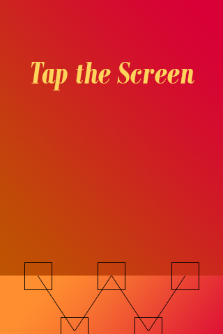

Hobby Games
This Is A Rhythm Game
A rhythm game prototype I have created using Phaser.
Here it is in itch.io.
The source code for the game is also in available on Github.


Plate Tectonics Game
A bejeweled clone with only two kinds of blocks. This is my first attempt at making Phaser work on the web. Here it is on codepen.io.